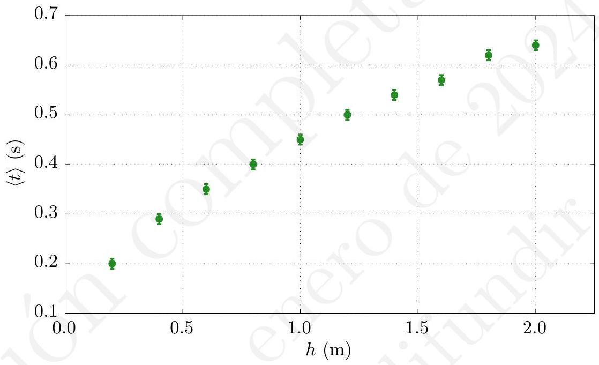
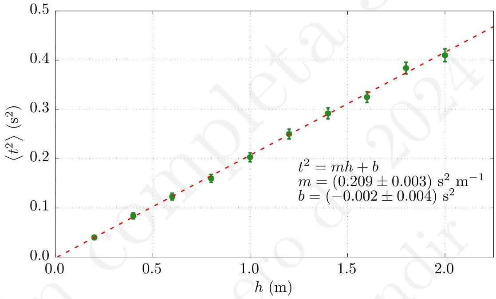
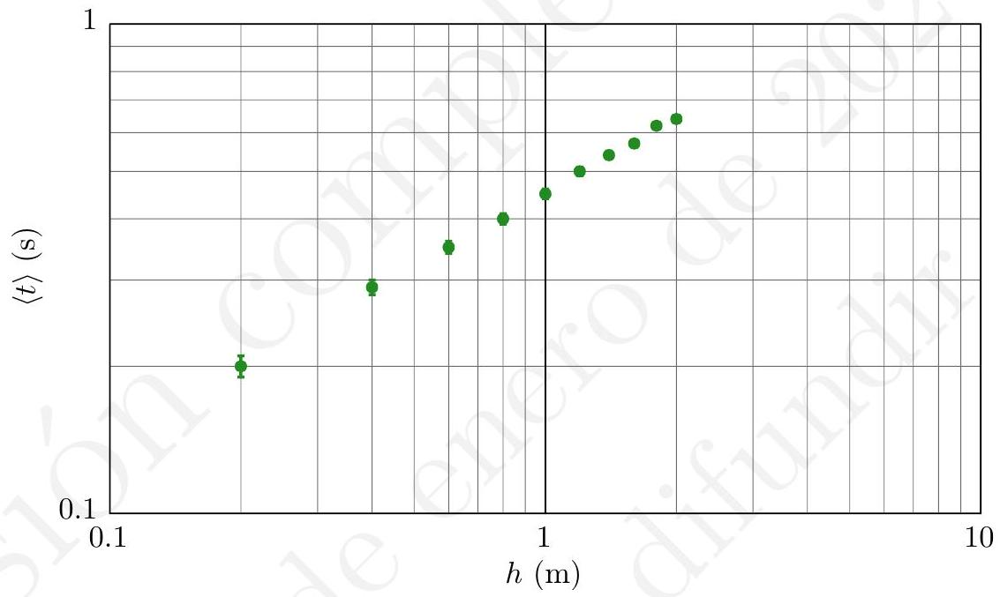
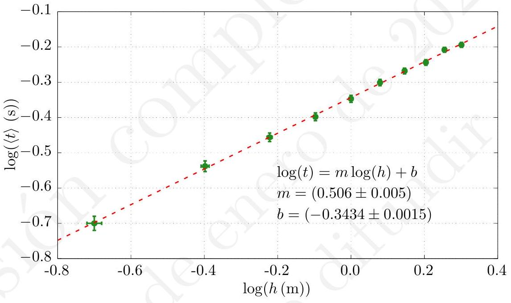
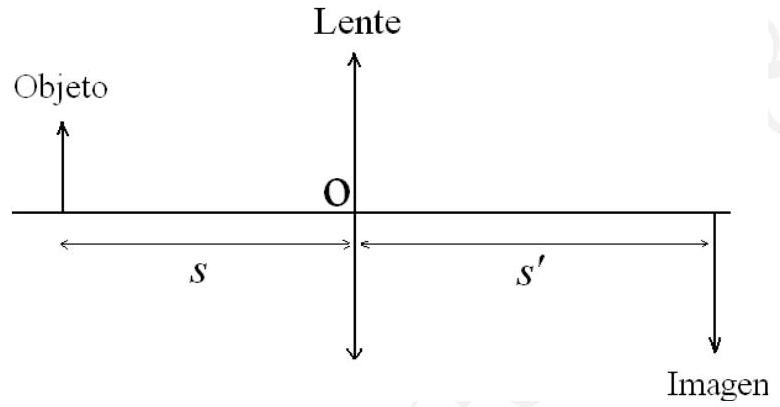
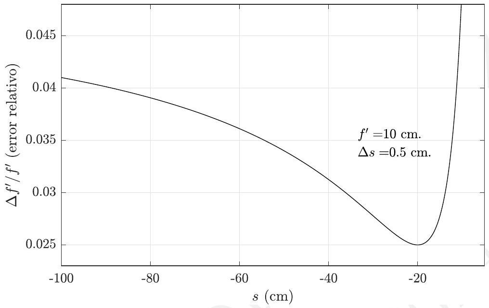
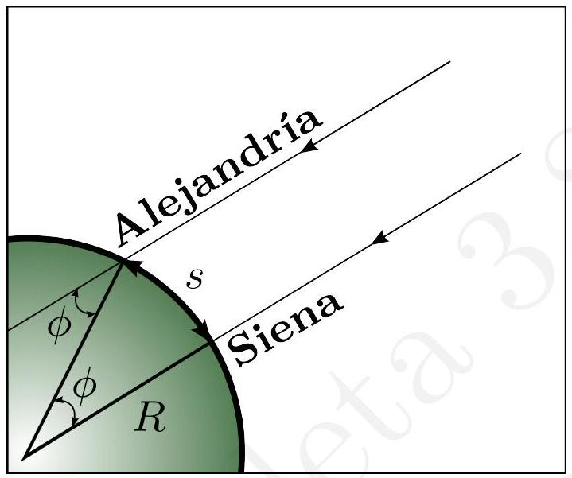
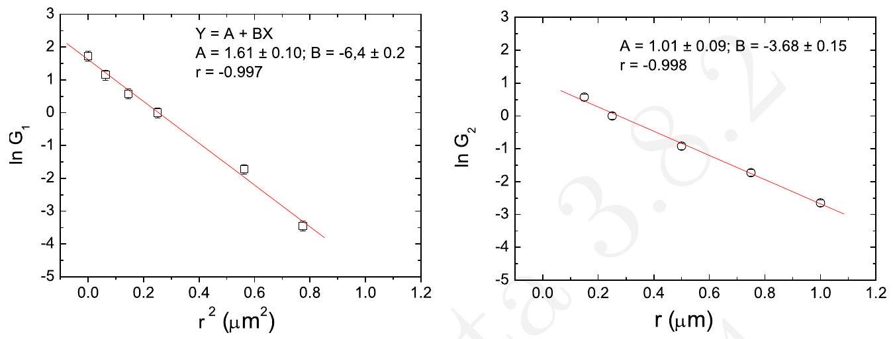
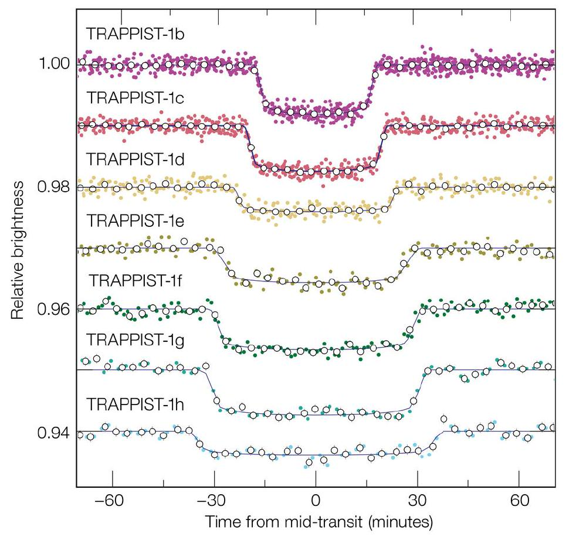
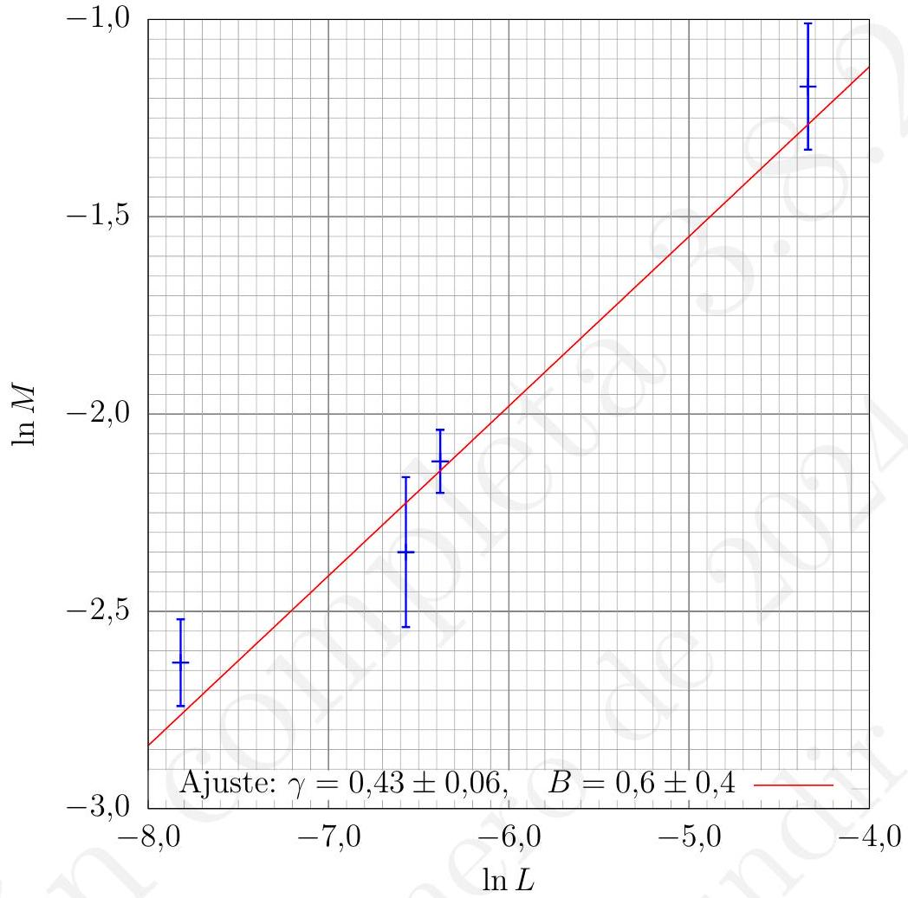

En este tema vamos a desarrollar varios casos concretos de análisis de datos según lo explicado en los temas anteriores. Los ejemplos desarrollados permitirán al estudiante comprobar cómo se analizan los datos obtenidos en el laboratorio, cómo se expresan en tablas y gráficas y cómo se obtienen los errores de las medidas indirectas. El estudiante encontrará en este tema ejemplos de regresiones lineales y de obtención de resultados a partir de estos cálculos. Primero, nos centraremos en un par de situaciones experimentales típicas, similares a las que podrá encontrar en el laboratorio al que acuda para realizar las prácticas. A continuación, veremos algunos ejemplos más desarrollados, basados en preguntas que aparecen en los exámenes presenciales de la asignatura.
Primero, vamos a desarrollar y comentar un par de ejemplos prácticos como los que se pueden encontrar en el laboratorio. Analizaremos el experimento típico de la obtención de la aceleración de la gravedad a partir de las medidas directas (tiempo de caída y altura de caída) y a continuación pondremos un ejemplo de cómo el análisis de errores permite encontrar la mejor forma de medir en una práctica de Óptica.
Consideremos como primer ejemplo una experiencia ficticia acerca del cálculo de la aceleración de la gravedad. El objetivo es calcular la aceleración de la gravedad en la superficie terrestre mediante el estudio del movimiento rectilíneo uniformemente acelerado de un cuerpo en caída libre. Para ello aplicaremos el siguiente procedimiento:
En los temas anteriores, como ilustración del cálculo de errores, hemos visto un cálculo de g midiendo el tiempo que tardaba el móvil en caer desde una altura determinada. Aquí vamos a seguir la misma idea, pero midiendo los tiempos que emplea en recorrer distintas alturas, extrayendo el valor de g a partir de la gráfica adecuada que relacione tiempos con alturas.
Vamos a suponer que las alturas se han dispuesto a intervalos de 20 cm desde 0,2 \mathrm{~m} hasta 2 m . Estas distancias han sido medidas con una cinta métrica graduada en centímetros \left(p_{h}=0,01 \mathrm{~m}\right). Para cada altura se efectuaron quince medidas del tiempo de caída con un cronómetro cuya precisión es de una centésima de segundo ( p_{t}=0,01 \mathrm{~s} ). En total tenemos 150 datos experimentales agrupados en diez grupos, por lo que en primer lugar presentaremos de forma compacta los datos experimentales, tal y como se hace en las tablas 5.1 y 5.2. Aprovechamos la tabla 5.2 para indicar en las dos últimas columnas los valores medios y desviaciones típicas de la media de los 10 tiempos de caída.
| h(\mathrm{~m}) | t_{1}(\mathrm{~s}) | t_{2}(\mathrm{~s}) | t_{3}(\mathrm{~s}) | t_{4}(\mathrm{~s}) | t_{5}(\mathrm{~s}) | t_{6}(\mathrm{~s}) | t_{7}(\mathrm{~s}) | t_{8}(\mathrm{~s}) | t_{9}(\mathrm{~s}) |
|---|---|---|---|---|---|---|---|---|---|
| 0,20 | 0,18 | 0,19 | 0,17 | 0,22 | 0,21 | 0,20 | 0,22 | 0,18 | 0,19 |
| 0,40 | 0,28 | 0,29 | 0,27 | 0,30 | 0,28 | 0,28 | 0,30 | 0,29 | 0,27 |
| 0,60 | 0,33 | 0,35 | 0,34 | 0,37 | 0,35 | 0,36 | 0,36 | 0,35 | 0,38 |
| 0,80 | 0,42 | 0,40 | 0,40 | 0,39 | 0,41 | 0,37 | 0,41 | 0,40 | 0,42 |
| 1,00 | 0,44 | 0,45 | 0,45 | 0,46 | 0,44 | 0,45 | 0,45 | 0,46 | 0,45 |
| 1,20 | 0,50 | 0,49 | 0,50 | 0,51 | 0,49 | 0,50 | 0,50 | 0,49 | 0,50 |
| 1,40 | 0,54 | 0,53 | 0,53 | 0,54 | 0,55 | 0,53 | 0,53 | 0,54 | 0,54 |
| 1,60 | 0,57 | 0,57 | 0,58 | 0,56 | 0,56 | 0,57 | 0,57 | 0,56 | 0,57 |
| 1,80 | 0,60 | 0,60 | 0,62 | 0,61 | 0,62 | 0,61 | 0,61 | 0,69 | 0,62 |
| 2,00 | 0,62 | 0,61 | 0,63 | 0,63 | 0,64 | 0,64 | 0,64 | 0,64 | 0,63 |
Tabla 5.1. Medidas experimentales para el experimento de caída libre.
| h(\mathrm{~m}) | t_{10}(\mathrm{~s}) | t_{11}(\mathrm{~s}) | t_{12}(\mathrm{~s}) | t_{13}(\mathrm{~s}) | t_{14}(\mathrm{~s}) | t_{15}(\mathrm{~s}) | \langle t\rangle(\mathrm{s}) | s(\mathrm{~s}) |
|---|---|---|---|---|---|---|---|---|
| 0,20 | 0,20 | 0,21 | 0,19 | 0,22 | 0,21 | 0,20 | 0,199 | 0,004 |
| 0,40 | 0,28 | 0,29 | 0,30 | 0,27 | 0,28 | 0,30 | 0,285 | 0,003 |
| 0,60 | 0,34 | 0,33 | 0,35 | 0,33 | 0,36 | 0,35 | 0,350 | 0,004 |
| 0,80 | 0,40 | 0,41 | 0,38 | 0,41 | 0,40 | 0,39 | 0,401 | 0,003 |
| 1,00 | 0,44 | 0,45 | 0,47 | 0,44 | 0,45 | 0,45 | 0,450 | 0,002 |
| 1,20 | 0,50 | 0,49 | 0,48 | 0,48 | 0,51 | 0,50 | 0,496 | 0,002 |
| 1,40 | 0,53 | 0,53 | 0,53 | 0,53 | 0,54 | 0,53 | 0,535 | 0,002 |
| 1,60 | 0,59 | 0,57 | 0,58 | 0,58 | 0,57 | 0,56 | 0,571 | 0,002 |
| 1,80 | 0,61 | 0,61 | 0,60 | 0,60 | 0,62 | 0,61 | 0,615 | 0,005 |
| 2,00 | 0,65 | 0,64 | 0,65 | 0,65 | 0,64 | 0,64 | 0,637 | 0,003 |
Tabla 5.2. Continuación de los datos de la tabla 5.1 Las dos últimas columnas son la media de los valores de t y s, que representan la desviación típica de la media.
Ahora bien, puesto que en todos los casos p_{t}>s, tomaremos como error en cada uno de los diez tiempos la precisión del cronómetro. Los datos definitivos se reflejan en la tabla 5.3.
| h(\mathrm{~m}) | \Delta h(\mathrm{~m}) | \langle t\rangle(\mathrm{s}) | \Delta t(\mathrm{~s}) |
|---|---|---|---|
| 0,20 | 0,01 | 0,20 | 0,01 |
| 0,40 | 0,01 | 0,29 | 0,01 |
| 0,60 | 0,01 | 0,35 | 0,01 |
| 0,80 | 0,01 | 0,40 | 0,01 |
| 1,00 | 0,01 | 0,45 | 0,01 |
| 1,20 | 0,01 | 0,50 | 0,01 |
| 1,40 | 0,01 | 0,54 | 0,01 |
| 1,60 | 0,01 | 0,57 | 0,01 |
| 1,80 | 0,01 | 0,62 | 0,01 |
| 2,00 | 0,01 | 0,64 | 0,01 |
Tabla 5.3. Altura/tiempo.
Véase que en la tabla 5.3 no estamos utilizando las desviaciones típicas de la media para el caso de los valores medios del tiempo de caída, tal y como aparecen en la tabla 5.2. De acuerdo con los criterios que estamos usando en este texto, el error asociado a la media de tiempos debería ser ese, no el de la precisión del cronómetro. Sin embargo, tener un criterio pesimista a la hora de asignar un error suele ser la práctica habitual en el laboratorio. Lo que el experimentador concluye en esta asignación del error es que el valor de la desviación típica de la media es demasiado pequeño en comparación con la incertidumbre asociada al aparato.
En este caso, no se está calculando una cantidad concreta, una medida de una magnitud; más bien se está buscando una forma fiable de obtener los valores de los tiempos de caída, es decir, una medida de medidas que permita tener un valor adecuado para obtener una medida indirecta a través de una regresión lineal posterior. Es decir, el criterio empleado en este caso en concreto es que la media de tiempos es una medida que hemos obtenido casi directamente del aparato y el error de la precisión del aparato es adecuado. El experimentador supone aquí también que va a realizar posteriormente una regresión lineal con estos datos, la cual no va a tener en cuenta el error de los datos de abscisas, con lo que la asignación de estos errores en concreto no va a afectar al resultado final obtenido 1 A continuación, dibujamos la primera gráfica (figura 5.1 a partir de la tabla 5.2). En una segunda figura representamos los valores de la tabla 5.3, tal y como puede verse en la figura 5.2. En esta figura, incluimos la recta obtenida por mínimos cuadrados a partir de los datos. Nótese que, mientras en la primera gráfica todas las barras de error asociadas a los tiempos eran iguales, en la segunda esto no sucede (si usamos propagación de errores \epsilon_{t^{2}}=2 t \epsilon_{t}, algo que ha de tenerse en cuenta).

Esta recta es de la forma:
t^{2}=m h+b
siendo m la pendiente y b la ordenada en el origen. Por otro lado, el resultado
1teórico es: t^{2}=\frac{2}{g} h, por lo que: m_{\mathrm{t}}=\frac{2}{g} ; \quad b_{\mathrm{t}}=0

Realizando un ajuste de una recta por mínimos cuadrados, obtenemos los siguientes resultados:
\begin{aligned} m & =0,2085697 \ldots \mathrm{~s}^{2} \mathrm{~m}^{-1}, \quad \epsilon_{m}=0,0030689 \ldots \mathrm{~s}^{2} \mathrm{~m}^{-1} . \\ b & =-0,0024667 \ldots \mathrm{~s}^{2}, \quad \epsilon_{b}=0,0038084 \ldots \mathrm{~s}^{2} . \end{aligned}
Esto es:
\begin{aligned} m & =(0,209 \pm 0,003) \mathrm{s}^{2} \mathrm{~m}^{-1}, \\ b & =(-0,002 \pm 0,004) \mathrm{s}^{2} . \end{aligned}
Dentro del margen de error, la ordenada en el origen de la gráfica es nula. De esta forma, la aceleración de la gravedad puede escribirse como:
g=9,569 \ldots \mathrm{~m} \mathrm{~s}^{-2}, \quad \epsilon_{g}=0,141 \ldots \mathrm{~m} \mathrm{~s}^{-2} .
Finalmente obtenemos:
g=(9,57 \pm 0,14) \mathrm{m} \mathrm{~s}^{-2} .
Notemos que el error relativo cometido en el cálculo de g es e_{r} \simeq 1,5 \%, lo que da un resultado aceptable para un laboratorio de estudiantes.
En el supuesto caso de que quisiésemos emplear papel logarítmico para representar t en función de h, no hay que hacer ninguna manipulación, puesto que el propio papel ya se encuentra graduado adecuadamente. La figura 5.3 muestra efectivamente cómo se vería el gráfico en escala doblemente logarítmica.

Por último, representamos el logaritmo del tiempo de caí da frente al logaritmo de la altura. La gráfica es, salvo los datos numéricos, exactamente la misma que la anterior. Los datos que empleamos a continuación vienen dados por la tabla 5.4. Los errores asociados a los logaritmos (en base 10), que aparecen en esta tabla, se calculan de la siguiente forma: Si tenemos que y=\log x, entonces:
\Delta y=\left|\frac{d \log x}{d x}\right| \Delta x=\left|\frac{1}{x \ln 10}\right| \Delta x .
| \log h(\mathrm{~m}) | \Delta \log h(\mathrm{~m}) | \log \langle t\rangle(\mathrm{s}) | \Delta \log t(\mathrm{~s}) |
|---|---|---|---|
| -0,70 | 0,02 | -0,70 | 0,02 |
| -0,398 | 0,011 | -0,538 | 0,015 |
| -0,222 | 0,007 | -0,456 | 0,012 |
| -0,097 | 0,005 | -0,398 | 0,011 |
| 0,000 | 0,004 | -0,347 | 0,010 |
| 0,079 | 0,004 | -0,301 | 0,009 |
| 0,146 | 0,003 | -0,268 | 0,008 |
| 0,204 | 0,003 | -0,244 | 0,008 |
| 0,255 | 0,002 | -0,208 | 0,007 |
| 0,301 | 0,002 | -0,194 | 0,007 |
Tabla 5.4. Logaritmos de los datos experimentales (con error).
Con estos datos, podemos utilizar las expresiones del ajuste de mí nimos cuadrados. El resultado se representan en la figura 5.4.
En este caso, la recta ajustada es de la forma:
\log t=m^{\prime} \log h+b^{\prime}
y como la expresión teórica es:
t=\sqrt{\frac{2}{g}} h^{1 / 2}
se debe cumplir que:
m_{\mathrm{t}}^{\prime}=\frac{1}{2} ; \quad b_{\mathrm{t}}^{\prime}=\frac{1}{2} \log \left(\frac{2}{g}\right) \Rightarrow g=2 \times 10^{-2 b_{\mathrm{t}}^{\prime}}\left(g \text { en } \mathrm{m} \mathrm{~s}^{-2}\right)
Mediante un ajuste de mínimos cuadrados obtenemos que:
\begin{aligned} m^{\prime} & =0,506 \ldots & \epsilon_{m^{\prime}} & =0,005 \ldots \\ b^{\prime} & =-0,3434 \ldots & \epsilon_{b^{\prime}} & =0,0015 \ldots \end{aligned}
Observamos aquí que la pendiente obtenida experimentalmente (de valor 0,506 \pm 0,005 se ajusta dentro del margen de error al valor esperado m=
0,5), lo que confirma la bondad del ajuste realizado. La aceleración de la gravedad, por su parte, puede obtenerse como:
\begin{aligned} g & =2 \times 10^{-2 b^{\prime}}\left(g \text { en } \mathrm{m} \mathrm{~s}^{-2}\right)=9,724 \ldots \mathrm{~m} \mathrm{~s}^{-2} \\ \epsilon_{g} & =\left|-4 \times 10^{-2 b^{\prime}} \times \ln 10\right| \epsilon_{b^{\prime}}=2 g \epsilon_{b^{\prime}} \ln 10=0,066 \ldots \mathrm{~m} \mathrm{~s}^{-2} \end{aligned}
de forma que, redondeando:
g=9,72 \pm 0,06 \mathrm{~m} \mathrm{~s}^{-2}

El uso de ambos métodos para obtener el valor de g presenta algunas diferencias metodológicas, aunque, como hemos visto, el segundo método proporciona un mejor valor. Veamos algunas diferencias.
La primera diferencia entre la gráfica lineal y la logarítmica es el espaciado entre los datos. Mientras que en la figura 5.1 los datos en abscisas están equiespaciados por intervalos de 0,2 \mathrm{~m}, en el caso de la figura 5.4 esto no ocurre. Por tanto, se generan espacios entre dato y dato que podrían modificar el resultado obtenido. Es decir, si desde el principio del experimento sabemos que la regresión que vamos a calcular va a ser con datos logarítmicos en las abscisas, es una buena práctica tomar los datos de entrada en el experimento equiespaciados en esta escala. De lo contrario, la recta de regresión tenderá a inclinarse hacia la región donde los datos experimentales se encuentran más juntos. Siempre que se realice una regresión lineal (con el método explicado) debe intentarse que los datos se encuentren separados por cantidades iguales.
Una segunda diferencia, más de concepto de las magnitudes involucradas, es que, usando el primer método (el lineal), ya estamos presuponiendo que t^{2} y h son proporcionales, obteniéndose el valor de g consecuente con el ajuste. En este segundo método, con la gráfica logarítmica, solo estamos suponiendo la proporcionalidad de h con una potencia de t. El ajuste nos indica tanto la potencia como el valor de g. Por tanto, el segundo método es más general, ya que inmediatamente confirma (o desmiente) si una magnitud es proporcional a una potencia «cualquiera» de otra.
Por último, en la gráfica 5.4 hemos incluido los errores asociados a cada uno de los datos, tanto en abscisas como en ordenadas. Sin embargo, el cálculo de la regresión lineal no incluye los errores de estos datos, debido a las razones expuestas a lo largo del texto. Aún así, estas barras de error son necesarias y deben incluirse en las gráficas que se realicen en las prácticas ya que nos ayudan a evaluar la calidad de los datos experimentales obtenidos y nos dan mucha información, aunque sea de forma cualitativa, de lo que ha sucedido en el proceso de medición o de si tiene sentido o no realizar el ajuste por mínimos cuadrados.
Vamos a suponer un experimento que consiste en hallar la distancia focal f^{\prime} de una lente convergente a través de la medida de distancias objeto e imagen. Cuando estemos en el laboratorio dispondremos de una serie de guiones que nos informarán de la teoría básica de los sistemas que vayamos a emplear. En este caso necesitamos saber que s y s^{\prime} son las distancias objeto e imagen, respectivamente, para una lente de focal f^{\prime} (véase imagen 5.5). Nuestro objetivo es obtener el valor de f^{\prime} midiendo s y s^{\prime}. Es decir, estas dos últimas son las medidas directas, mientras que f^{\prime} es la medida indirecta o resultado.

Primero, sabemos que la ley que liga estas dos magnitudes, suponiendo que la lente empleada es delgada, es:
\frac{1}{f^{\prime}}=\frac{1}{s^{\prime}}-\frac{1}{s} .
Supongamos un montaje experimental típico en un laboratorio de Óptica. Disponemos de una fuente de luz, que ilumina un objeto y tras el cual se encuentra una lente de focal f^{\prime} y una pantalla de papel milimetrado donde se observa la imagen resultante. Todo el sistema está montado en un banco óptico de 100 cm de longitud en el que se logra una precisión de 0,01 \mathrm{~cm}.
Una vez que tenemos este sistema experimental, debemos tomar valores para s^{\prime}, dado un determinado s, para finalmente obtener f^{\prime} mediante la aplicación expresión (5.2). En este punto debemos pararnos y reflexionar, ya que no debemos empezar las mediciones sin pensar antes cuál es la manera más adecuada de medir dado el sistema experimental del que disponemos.
Un posible planteamiento inicial consiste en analizar el error relativo de f^{\prime} antes de medir. Primero calculemos el error de 1 / f^{\prime} :
\Delta\left(\frac{1}{f^{\prime}}\right)=\frac{\Delta f^{\prime}}{f^{\prime 2}} .
Ahora bien, a partir de la ecuación (5.2) calculamos que:
\Delta\left(\frac{1}{f^{\prime}}\right)=\Delta\left(\frac{1}{s^{\prime}}-\frac{1}{s}\right)=\frac{\Delta s^{\prime}}{s^{\prime 2}}+\frac{\Delta s}{s^{2}}
donde hemos empleado propagación lineal de los errores y hemos eliminado los signos negativos al hacer módulo en las derivadas correspondientes. Nos olvidamos de los signos negativos a partir de ahora. Si igualamos la última ecuación con la anterior:
\frac{\Delta f^{\prime}}{f^{\prime 2}}=\frac{\Delta s^{\prime}}{s^{\prime 2}}+\frac{\Delta s}{s^{2}} \rightarrow \frac{\Delta f^{\prime}}{f^{\prime}}=f^{\prime}\left(\frac{\Delta s^{\prime}}{s^{\prime 2}}+\frac{\Delta s}{s^{2}}\right) .
A partir de esta última expresión, sustituyendo f^{\prime} en función de s y s^{\prime}, y operando un poco, obtenemos finalmente:
\frac{\Delta f^{\prime}}{f^{\prime}}=\frac{s^{2} \Delta s^{\prime}+s^{2} \Delta s}{s^{\prime} s\left(s-s^{\prime}\right)}
A continuación supongamos, para simplificar, algo razonable tal como que \Delta s^{\prime}=\Delta s, es decir que los errores de las distancias son iguales. Entonces nos quedaría que:
\frac{\Delta f^{\prime}}{f^{\prime}}=\frac{s^{2}+s^{2}}{s^{\prime} s\left(s-s^{\prime}\right)} \Delta s
Lo que pretendemos aquí es elegir valores tales que la función anterior sea lo más pequeña posible, es decir, que el error relativo de la distancia focal sea lo más pequeño posible. Podemos hacer la suposición de que f^{\prime} \sim 10 \mathrm{~cm} y que \Delta s \sim 0,5 \mathrm{~cm} (en el laboratorio podrían hacerse unas medidas rápidas para obtener estos valores aproximados), de forma que vayamos variando los valores de s como coordenada independiente y calculando a su vez los valores de s^{\prime} mediante la expresión (5.2). De esta forma, podemos dibujar una gráfica tal como la representada en la figura 5.6, donde vemos que existen distancias objetos más apropiadas que otras. En concreto, la figura nos muestra que interesa medir cerca de ese mínimo en torno a s=-20 cm .

Este tipo de técnica, basada en el diseño a priori de la práctica, es enormemente recomendable y marca la diferencia entre una práctica notable y una práctica excelente. Mediante este tipo de razonamientos, podemos controlar los errores relativos antes de medir y podemos saber dónde medir y cuántas medidas tomar a la vez que controlamos la calidad de los datos obtenidos.
El siguiente paso sería medir una serie de distancias imagen s^{\prime} para unas distancias objeto fijas s. El objetivo es garantizar la reproducibilidad de la medida, tomando tantas como sea necesario hasta que, por ejemplo, observemos que la dispersión no siga aumentando. Luego cambiaríamos la distancia objeto y realizaríamos varias medidas para s^{\prime}. Un conjunto de datos para este experimento puede ser el que se muestra en la tabla 5.5, donde la primera columna son las distancias objeto fijas. Véase que estas se han elegido cerca del mínimo del error relativo.
| s(\mathrm{~cm}) | s_{1}^{\prime} | s_{2}^{\prime} | s_{3}^{\prime} | s_{4}^{\prime} | s_{5}^{\prime} | s_{6}^{\prime} | s_{7}^{\prime} | s_{8}^{\prime} | s_{9}^{\prime} | s_{10}^{\prime} |
|---|---|---|---|---|---|---|---|---|---|---|
| 20,00 | 19,3 | 20,2 | 19,65 | 20,25 | 20,77 | 19,95 | 19,05 | 19,25 | 20,85 | 20,69 |
| 22,00 | 17,95 | 17,95 | 18,25 | 15,25 | 18,7 | 18,65 | 18,26 | 18,17 | 18,51 | 18,7 |
| 24,00 | 17,64 | 16,87 | 17,84 | 16,65 | 17,32 | 17,47 | 16,77 | 17,65 | 17,23 | 16,8 |
Tabla 5.5. Medidas de s^{\prime} para tres valores de s.
Para este conjunto de datos, calculamos las medias y la desviación típica de la media (no confundir ahora esta cantidad con s ), de forma que obtendríamos los resultados para cada una de las elecciones de s :
\begin{aligned} & s^{\prime}=(20,0 \pm 0,2) \mathrm{cm}(\text { para } s=20,00 \mathrm{~cm}) \\ & s^{\prime}=(18,0 \pm 0,3) \mathrm{cm}(\text { para } s=22,00 \mathrm{~cm}) \\ & s^{\prime}=(17,22 \pm 0,14) \mathrm{cm}(\text { para } s=24,00 \mathrm{~cm}) \end{aligned}
A continuación, queda como ejercicio para el estudiante, podríamos calcular los valores correspondientes para la distancia focal para cada uno de los pares de datos y obtener la media ponderada en errores de los valores para obtener un resultado final de la distancia focal.
Se presentan aquí algunos ejemplos de análisis de datos extraídos de ejercicios aparecidos en exámenes de esta misma asignatura. La redacción puede ser un poco distinta por la adaptación a los apuntes pero hemos conservado los elementos básicos. Recomendamos hacer los diversos problemas con la única ayuda de una calculadora científica, lápiz, papel y papel milimetrado para realizar las gráficas.
Eratóstenes de Cirene fue un famoso matemático, astrónomo y geógrafo griego del siglo III a. C. Uno de sus mayores hallazgos fue la determinación del tamaño de la Tierra a partir de la medida indirecta de su circunferencia. Su experimento, de una precisión exquisita para la época en la que se desarrolló, supuso un hito en la historia de la física por la simpleza de su método y lo exacto del resultado obtenido.
Sabiendo que durante el solsticio de verano en la antigua ciudad de Siena (actual Asuán) los objetos no proyectaban ninguna sombra (esto es, los rayos del Sol incidían perpendicularmente al suelo), Eratóstenes observó que en Alejandría no ocurría lo mismo, sino que los objetos proyectaban

ese mismo día una sombra a un determinado ángulo \phi (ver figura 5.7). Así, aplicando algunas nociones de Trigonometría básica dedujo que, si era capaz de determinar la distancia entre ambas ciudades (esto es, el arco de circunferencia entre ambos puntos, s ) podría obtener el radio de la Tierra, R, y la medida de la propia circunferencia terrestre, C, suponiéndola perfectamente esférica.
Supongamos que Eratóstenes enviase hasta 15 caravanas de camellos para que obtuvieran la distancia entre ambas ciudades. Las distancias obtenidas por cada excursión, expresadas en una unidad de magnitud de la época, el estadio, vienen dadas en la tabla 5.6 adjunta.
Las preguntas que vamos a resolver son las siguientes:
| Excursión | Distancia, s | Excursión | s |
|---|---|---|---|
| 1 | 5010 \pm 10 | 9 | 5000 \pm 10 |
| 2 | 4950 \pm 10 | 10 | 4999 \pm 1 |
| 3 | 5100 \pm 10 | 11 | 5150 \pm 10 |
| 4 | 4800 \pm 10 | 12 | 5100 \pm 10 |
| 5 | 4900 \pm 10 | 13 | 4800 \pm 10 |
| 6 | 5000 \pm 10 | 14 | 5050 \pm 10 |
| 7 | 5050 \pm 10 | 15 | 4980 \pm 10 |
| 8 | 4900 \pm 10 |
Tabla 5.6. Distancias entre Alejandría y Siena obtenidas por cada una de las caravanas de camellos enviadas por Eratóstenes. Las unidades de distancia son estadios.
precisa del ángulo que formaba la sombra proyectada de un objeto determinado en Alejandría dio asimismo como resultado \phi=(7,2 \pm 0,2)^{\circ}. Entonces, sabiendo que la circunferencia de la Tierra, C, se relaciona con su radio R a través de la expresión C=2 \pi R, y que el radio puede obtenerse a partir del ángulo \phi (en radianes) y el arco de circunferencia recorrida s mediante s=R \phi, calcule el valor de la circunferencia de la Tierra (supuesta esférica) que obtuvo Eratóstenes con los datos proporcionados. Obtenga el error asociado al resultado anterior mediante propagación de errores y exprese correctamente el resultado obtenido en unidades de estadios.
Para contestar a las preguntas del primer punto, primero obtenemos la desviación típica de la media:
\begin{aligned} \bar{s} & =\frac{\sum_{i} s_{i}}{N}=4985,933 \ldots \text { estadios. } \\ \sigma_{\bar{s}} & =\sqrt{\frac{\sum_{i}\left(s_{i}-\bar{s}\right)^{2}}{N(N-1)}}=26,505 \ldots \text { estadios. } \end{aligned}
El error debe tener una única cifra significativa, por lo que aproximamos \sigma_{\bar{s}} \simeq 30 estadios. Teniendo en cuenta que la única cifra significativa se encuentra en la decena, debemos igualmente aproximar el valor medio de forma que la última cifra significativa sea la correspondiente a las decenas, esto es, \bar{s} \simeq 4990 estadios.
Finalmente, agrupando ambas cantidades, la forma correcta de expresar la distancia entre Siena y Alejandría es:
s=(4990 \pm 30) \text { estadios. }
Para contestar al segundo punto primeramente debemos expresar la medida del ángulo en radianes, en lugar de en grados. Basta con recordar que los 360^{\circ} en los que se divide una circunferencia se corresponden con 2 \pi radianes:
\begin{aligned} C & =2 \pi R=2 \pi \frac{s}{\phi(\mathrm{rad})}=2 \pi \frac{s}{\phi\left(^{\circ}\right)} \frac{360}{2 \pi}=360 \frac{s}{\phi\left(^{\circ}\right)}= \\ & =250000 \text { estadios. } \end{aligned}
El error en la circunferencia, al ser una medida indirecta, lo obtenemos mediante propagación (lineal) de errores, tomando el valor absoluto de las derivadas parciales respecto de cada una de las variables implicadas:
\begin{aligned} \sigma_{C} & =\left|\frac{\partial C}{\partial s}\right| \sigma_{s}+\left|\frac{\partial C}{\partial \phi}\right| \sigma_{\phi}=360\left(\frac{1}{\phi} \sigma_{s}+\frac{s}{\phi^{2}} \sigma_{\phi}\right)= \\ & =8444,44 \ldots \text { estadios. } \end{aligned}
El resultado de la medida del perímetro de la Tierra se expresa correctamente ajustando al número de cifras significativas correctas (como en la pregunta anterior):
p=(250000 \pm 8000) \text { estadios. }
Por último, obtenemos que la circunferencia de la Tierra, según la equivalencia de estadios egipcios, d, es:
\begin{aligned} C^{\exp } & =C^{\exp }(\text { estadios }) \cdot d=3,925 \times 10^{7} \mathrm{~m}=39250 \mathrm{~km}, \\ \sigma_{C} & =d \sigma_{C^{\exp }(\text { est. })}+C^{\exp }(\text { est. }) \sigma_{d}=1,035 \times 10^{6} \mathrm{~m}=1035 \mathrm{~km}, \\ C^{\exp } & =(39000 \pm 1000) \mathrm{km} . \end{aligned}
El error relativo en el cálculo del estadio egipcio no es más que:
e_{C}=\frac{\sigma_{C^{\exp }}}{C^{\exp }} \simeq 0,0256 \ldots=2,6 \%
Se dice que un resultado es exacto si el «valor verdadero» se encuentra dentro del intervalo determinado por el valor esperado y el error absoluto asociado. Dado que C^{\text {teo }} \notin\left(C^{\exp }-\sigma_{C}, C^{\exp }+\sigma_{C}\right), podemos concluir que la medida obtenida por Eratóstenes no es exacta.
Suponga un experimento en el cual se observa, mediante una determinada técnica óptica, como unas esferas coloidales de tamaño nanométrico difunden libremente dentro de distintos tipos de fluidos. En principio, estas esferas describirán un movimiento errático, aleatorio, que se conoce como «movimiento browniano». Teóricamente, los desplazamientos o saltos espaciales, r, de estas esferas en un determinado lapso de tiempo, \tau, siguen una distribución gaussiana de la siguiente forma:
G_{D}(r) \propto \exp \left(-\frac{r^{2}}{4 D \tau}\right),
donde el símbolo \propto significa «proporcional a» y donde la difusión está caracterizada por D, que es el «coeficiente de difusión» o de Stokes-Einstein, y viene dado por:
D=\frac{k_{B} T}{6 \pi \eta a},
donde k_{B}=1,38 \times 10^{-23} \mathrm{~J} / \mathrm{K} es la constante de Boltzmann, T es la temperatura absoluta de la muestra, a es el radio de las nanoesferas y \eta es la viscosidad del fluido.
Bajo ciertas condiciones, puede aparecer un fenómeno que se denomina «difusión anómala». En tal caso, para valores que no estén en la posición central de la gaussiana (es decir, cuando r \neq 0,0 \mu \mathrm{~m} ), la distribución de los saltos r seguirá un decrecimiento en forma de exponencial ( \lambda es una constante que se expresa en \mu \mathrm{m} ):
G_{\lambda}(r) \propto \exp \left(-\frac{r}{\lambda}\right) .
Mediante la técnica óptica mencionada, se miden las posiciones de las nanoesferas de radio a=50 \pm 5 \mathrm{~nm}, a una temperatura T=20 \pm 1^{\circ} \mathrm{C} en dos fluidos diferentes. Los saltos de las partículas se dan en intervalos de tiempo \tau=0,100 \pm 0,001 \mathrm{~s}. Las medidas conducen a unos histogramas que nos permiten obtener las distribuciones en situaciones experimentales tipo difusivo o anómalo. Llamaremos a cada una de las colecciones de datos G_{1}(r) y G_{2}(r), respectivamente.
La tabla 5.7 resume estas mediciones para cada una de las dos distribuciones, junto con los respectivos desplazamientos r (cuyo error supondremos despreciable). Las medidas de las distribuciones tendrán unas incertidumbres asociadas del 15 \% para el caso de G_{1}(r) y del 10 \% para los datos correspondientes a G_{2}(r).
Al tomar logaritmos neperianos a ambos lados de las expresiones (5.4) y (5.6), los datos que sigan estas funciones se comportarán según una recta decreciente al representar frente a r^{2} o frente a r, respectivamente. Sabemos que los datos de G_{2} se han realizado en un fluido «extraño», mientras que las de G_{1} se han realizado en un fluido estándar (newtoniano), tal como el
| G_{1} | 5,62 | 3,16 | 1,78 | 1,00 | 0,18 | 0,03 |
|---|---|---|---|---|---|---|
| r(\mu \mathrm{~m}) | 0,00 | 0,25 | 0,38 | 0,50 | 0,75 | 0,88 |
| G_{2} | 10,00 | 1,78 | 1,00 | 0,40 | 0,18 | 0,07 |
| r(\mu \mathrm{~m}) | 0,00 | 0,15 | 0,25 | 0,50 | 0,75 | 1,00 |
Tabla 5.7. Distribuciones experimentales G_{1}(r) y G_{2}(r).
agua o una mezcla de agua y glicerol. Con todos estos datos y explicaciones, contestaremos a las siguientes cuestiones:
Al tomar logaritmos neperianos, la única dificultad es obtener el error de y_{1,2} \equiv \ln G_{1,2}, que es igual a:
\Delta\left(\ln G_{1,2}\right)=\frac{\Delta G_{1,2}}{G_{1,2}} .
| \ln G_{1}(r) | 1,73 | 1,15 | 0,58 | 0,00 | -1,73 | -3,45 |
|---|---|---|---|---|---|---|
| \Delta\left(\ln G_{1}(r)\right) | 0,15 | 0,15 | 0,15 | 0,15 | 0,15 | 0,15 |
| r^{2}\left(\mu \mathrm{~m}^{2}\right) | 0,00 | 0,06 | 0,14 | 0,25 | 0,56 | 0,77 |
Tabla 5.8. \ln G_{1}(r) frente a r^{2}.
| \ln G_{2}(r) | 2,30 | 0,58 | 0,00 | -0,92 | -1,73 | -2,65 |
|---|---|---|---|---|---|---|
| \Delta\left(\ln G_{2}(r)\right) | 0,10 | 0,10 | 0,10 | 0,10 | 0,10 | 0,10 |
| r(\mu \mathrm{~m}) | 0,00 | 0,15 | 0,25 | 0,50 | 0,75 | 1,00 |
Tabla 5.9. \ln G_{2}(r) frente a r.
Aplicando ahora el dato de que G_{1} tiene un error del 15 \% y G_{2} del 10 \% tendremos que:
\Delta\left(\ln G_{1,2}\right)=\frac{\alpha \times G_{1,2}}{G_{1,2}}=\alpha,
donde \alpha=0,15 para G_{1} y 0,10 para G_{2}. La tablas pedidas serían las tablas 5.8 y 5.9. Hemos de tener en cuenta que los datos deben siempre expresarse en forma de tabla, tal y como se pide en las preguntas, no de forma suelta y desorganizada. Los valores numéricos deben estar redondeados de forma adecuada al error, en este caso, no tiene sentido proporcionar más de dos cifras decimales.
Los datos de las tablas se representan en la gráfica 5.8. Véase que en estas figuras se han usado barras de error para cada uno de los datos, aunque esta incertidumbre es pequeña y sería muy difícil de dibujar si no es con un programa informático. En la figura de la derecha, cuando se representa frente a r buscando una relación con la expresión (5.6), no se ha representado el primer dato (0,00 \mu \mathrm{~m}), tal y como se indica en el enunciado. Este punto es especialmente importante, ya que como tenemos muy pocos puntos, representar un punto incorrecto (con respecto a la función a ajustar) cambiará los resultados. Los coeficientes de correlación obtenidos en ambas representaciones son todos |r|>0,995, confirmando la correlación de los datos a las respectivas funciones teóricas.
Finalmente, una vez que conocemos las incertidumbres de todos los valores,

no hay más que utilizar las expresiones teóricas y el método de propagación de errores para obtener los errores tanto de D como de \eta. En este ejercicio utilizaremos propagación lineal de errores, no cuadrática, para mayor simplicidad en los cálculos. En el caso de D, la incertidumbre la calculamos mediante propagación lineal de errores:
\Delta D=D\left\{\frac{\Delta B}{B}+\frac{\Delta \tau}{\tau}\right\},
donde hemos usado B \equiv 1 / 4 D \tau, que es la pendiente de la regresión lineal, tal y como se muestra en el cuadro de la izquierda de la figura 5.8, Con los datos del ajuste de G_{1}, se obtiene que:
D=(0,393 \pm 0,019) \mu \mathrm{m}^{2} / \mathrm{s} .
Para el caso de la viscosidad, operando un poco, tendríamos la siguiente expresión:
\Delta \eta=\eta\left\{\frac{\Delta D}{D}+\frac{\Delta a}{a}+\frac{\Delta T}{T}\right\} .
Véase que el error relativo de \eta es la suma de los errores relativos de las variables implicadas. De la expresión anterior obtenemos:
\eta=(10,9 \pm 1,7) \mathrm{mPa} \mathrm{~s} .
Mediante los datos de G_{2} podemos obtener el valor de \lambda. Operando a través de la pendiente de la recta junto con su error, se obtiene el siguiente valor:
\lambda=(0,272 \pm 0,011) \mu \mathrm{m} .
Hemos de recordar aquí que es esencial expresar correctamente las magnitudes calculadas mediante el uso del redondeo, el error asociado y las unidades correspondientes.
En los últimos tiempos se están detectando sistemas planetarios en estrellas de la Vía Láctea. Uno de los métodos de detección es por el tránsito de los planetas delante de la estrella, lo que ocasiona una ligera disminución del brillo de ésta. Lógicamente, este método sólo se aplica en los casos en que el tránsito intersecta la línea de visión desde la Tierra.
Entre los sistemas detectados por este método destaca TRAPPIST-1, que consta de una estrella del tipo enana roja (TRAPPIST-1a) y siete planetas que la orbitan, que se nombran con las letras \{b, c, d, e, f, g, h\} (véase figura 5.9.
Midiendo suficientes tránsitos podemos tener el periodo orbital de cada planeta, T. Además, éstos siguen la 3^{\text {a }} Ley de Kepler de acuerdo al radio medio de cada órbita, R :
R^{3}=C(M) T^{2}
donde C(M) es constante para todo el sistema y depende linealmente de la masa, M, del astro central:
C(M)=k M
donde k ya es una constante universal. En este ejercicio usaremos un sistema de unidades heterodoxo para tener números más manejables, donde el tiempo se mide en días [d], las distancias en millones de kilómetros o gigametros [\mathrm{Gm}] y la masa en masas solares \left[\mathrm{M}_{\odot}\right]

o \left[\mathrm{M}_{\mathrm{s}}\right]. En este sistema de unidades la constante de Kepler toma el valor:
k=25,095 \mathrm{Gm}^{3} \mathrm{~d}^{-2} \mathrm{M}_{\odot}^{-1}
que consideraremos exacto. Vamos a contestar las siguientes preguntas:
\begin{gathered} \left(M_{T}\right)_{1}=(0,079 \pm 0,013) \mathrm{M}_{\odot}, \quad\left(M_{T}\right)_{2}=(0,085 \pm 0,010) \mathrm{M}_{\odot} \\ \left(M_{T}\right)_{3}=(0,095 \pm 0,008) \mathrm{M}_{\odot} \end{gathered}
Calcule la masa del astro como la media ponderada de estas tres medidas. Dé el valor de la constante del sistema, C\left(M_{T}\right), con el error correspondiente.
| Planeta | t_{1}(\mathrm{~d}) | t_{N}(\mathrm{~d}) | \Delta t(\mathrm{~d}) | N |
|---|---|---|---|---|
| b | 1,910 | 30,612 | 0,008 | 20 |
| c | 1,445 | 30,503 | 0,011 | 13 |
| d | 3,942 | 28,249 | 0,014 | 7 |
| e | 4,240 | 28,628 | 0,016 | 5 |
| f | 2,985 | 30,611 | 0,018 | 4 |
Tabla 5.10. Tránsitos de los 5 planetas más internos de TRAPPIST-1 a lo largo de un mes. Se recogen los siguientes datos: el instante en que ocurren el primer y último tránsitos, (resp. t_{1} y t_{N} ) a partir de una fecha arbitraria; la incertidumbre en la determinación de los tránsitos, \Delta t; el número total de tránsitos registrado, N, incluidos el primero y último.
Para resolver la primera cuestión aplicamos las fórmulas (2.16) y (2.17):
\begin{aligned} \bar{M}_{T} & =\frac{\sum\left(M_{T}\right)_{i} / s_{i}^{2}}{\sum 1 / s_{i}^{2}}=\frac{0,079 \times 5917+0,085 \times 10000+0,095 \times 15625}{31542} \mathrm{M}_{\odot} \\ & =0,08883 \ldots \mathrm{M}_{\odot} \end{aligned}
Y el error de la media es:
\Delta M_{T}=\frac{1}{\sqrt{\sum 1 / s_{i}^{2}}}=\frac{1}{\sqrt{31542}} \mathrm{M}_{\odot}=0,0056 \ldots \mathrm{M}_{\odot}
Aplicando las conocidas reglas de adecuación del número de cifras significativas:
M_{T}=(0,089 \pm 0,006) \mathrm{M}_{\odot} .
Y la constante C\left(M_{T}\right) :
\begin{aligned} C\left(M_{T}\right) & =k M_{T}=\left(25,095 G \mathrm{Gm}^{3} \mathrm{~d}^{-2} \mathrm{M}_{\odot}^{-1}\right) \times(0,089 \pm 0,006) \mathrm{M}_{\odot} \\ & =(2,23 \pm 0,15) G \mathrm{~m}^{3} \mathrm{~d}^{-2} \end{aligned}
Para la siguiente cuestión hay que tener en cuenta que la tabla 5.10 nos da el número de tránsitos, N, que no coincide con el número total de revoluciones completas observadas de cada planeta, que es justamente N-1. Por otro lado el periodo de tránsito se calcula con:
T=\frac{t_{N}-t_{1}}{N-1}
y el error se obtiene propagando el error de t_{1} y t_{N}, que es el mismo (\Delta t). Usaremos propagación cuadrática:
\begin{aligned} \Delta T & =\sqrt{\left(\frac{\partial T}{\partial t_{1}} \Delta t_{1}\right)^{2}+\left(\frac{\partial T}{\partial t_{N}} \Delta t_{N}\right)^{2}} \\ & =\sqrt{\left(\frac{\Delta t_{1}}{N-1}\right)^{2}+\left(\frac{\Delta t_{N}}{N-1}\right)^{2}} \\ & =\frac{\sqrt{2} \Delta t}{N-1} \end{aligned}
El resultado se encuentra reflejado en la tabla 5.11. Obsérvese que cuantos más tránsitos acumulamos más pequeño es el error.
Ahora, a partir de la 3{ }^{\mathrm{a}} Ley de Kepler despejamos R :
R=C^{1 / 3} T^{2 / 3},
y el error lo obtenemos propagando el error en C y en T :
\begin{aligned} \Delta R & =\sqrt{\left(\frac{\partial R}{\partial C} \Delta C\right)^{2}+\left(\frac{\partial R}{\partial T} \Delta T\right)^{2}} \\ & =\sqrt{\frac{1}{9}\left(C^{-2 / 3} T^{2 / 3} \Delta C\right)^{2}+\frac{4}{9}\left(C^{1 / 3} T^{-1 / 3} \Delta T\right)^{2}} \end{aligned}
que también se puede escribir como:
\Delta R=R \sqrt{\frac{1}{9}\left(\frac{\Delta C}{C}\right)^{2}+\frac{4}{9}\left(\frac{\Delta T}{T}\right)^{2}} .
Se puede ver que, incluso en el peor de los casos, el error relativo debido a T es bastante menor que el debido a C; por lo tanto podemos quedarnos sólo con la expresión:
\Delta R \simeq R \frac{\Delta C}{3 C},
con lo cual los cálculos se simplifican mucho. El resultado se encuentra reflejado en la tabla 5.11.
| Planeta | t_{1}(\mathrm{~d}) | t_{N}(\mathrm{~d}) | \Delta t(\mathrm{~d}) | N | T(\mathrm{~d}) | R(\mathrm{Gm}) |
|---|---|---|---|---|---|---|
| b | 1,910 | 30,612 | 0,008 | 20 | 1,5106 \pm 0,0006 | 1,72 \pm 0,04 |
| c | 1,445 | 30,503 | 0,011 | 13 | 2,4215 \pm 0,0013 | 2,36 \pm 0,05 |
| d | 3,942 | 28,249 | 0,014 | 7 | 4,051 \pm 0,003 | 3,32 \pm 0,07 |
| e | 4,240 | 28,628 | 0,016 | 5 | 6,097 \pm 0,006 | 4,36 \pm 0,10 |
| f | 2,985 | 30,611 | 0,018 | 4 | 9,209 \pm 0,008 | 5,74 \pm 0,13 |
Tabla 5.11
Este ejemplo es una continuación del anterior y se usarán parte de sus datos.
En Astrofísica ha quedado bien establecido un modelo que relaciona la luminosidad, L, que emiten ciertos tipos de estrellas y su masa. En concreto, esta relación sigue una ley de este tipo: \left(M / M_{\odot}\right) \propto\left(L / L_{\odot}\right)^{\gamma}, donde M_{\odot} y L_{\odot} son, respectivamente, la masa y luminosidad del Sol (que se usan como referencia) y \gamma un parámetro que depende del tipo de estrella. También se puede expresar de forma logarítmica:
\ln M=B+\gamma \ln L,
| Estrella | L\left(\mathrm{~L}_{\odot}\right) | M\left(\mathrm{M}_{\odot}\right) |
|---|---|---|
| VB 10 | (4,00 \pm 0,01) \times 10^{-4} | 0,072 \pm 0,008 |
| Wolf 359 | (1,40 \pm 0,01) \times 10^{-3} | 0,095 \pm 0,018 |
| \alpha-Centauri C | (1,70 \pm 0,01) \times 10^{-3} | 0,12 \pm 0,01 |
| Gliese 581 | (1,30 \pm 0,01) \times 10^{-2} | 0,31 \pm 0,05 |
Tabla 5.12. Luminosidad y masa de varias estrellas del tipo enana roja.
es decir, que los logaritmos de la masa y la luminosidad siguen una relación lineal.
En el primer ejercicio la única dificultad es propagar correctamente el error al tomar \ln M :
\Delta(\ln M)=\left|\frac{\partial(\ln M)}{\partial M}\right| \Delta M=\frac{\Delta M}{M} .
| Estrella | L\left(\mathrm{~L}_{\odot}\right) | \ln L | M\left(\mathrm{M}_{\odot}\right) | \ln M |
|---|---|---|---|---|
| VB 10 | (4,00 \pm 0,01) \times 10^{-4} | -7,82 | 0,072 \pm 0,008 | -2,63 \pm 0,11 |
| Wolf 359 | (1,40 \pm 0,01) \times 10^{-3} | -6,57 | 0,095 \pm 0,018 | -2,35 \pm 0,19 |
| \alpha-Centauri C | (1,70 \pm 0,01) \times 10^{-3} | -6,38 | 0,12 \pm 0,01 | -2,12 \pm 0,08 |
| Gliese 581 | (1,30 \pm 0,01) \times 10^{-2} | -4,34 | 0,31 \pm 0,05 | -1,17 \pm 0,16 |
Tabla 5.13
Para \ln L no propagamos el error, sino que nos conformamos con escribir el resultado con 3 cifras significativas. Véase la tabla 5.13.
Para hacer la gráfica el valor de \ln M se ha de representar en el eje de ordenadas (vertical) y el de \ln L en el eje de abscisas (horizontal). Dada la fórmula \ln M=B+\gamma \ln L vemos que el papel de abscisas lo juega \ln L y el de ordenadas \ln M; entonces los parámetros \gamma y B son respectivamente la pendiente y la ordenada en el origen. Por tanto, aplicamos las fórmulas (4.8), (4.9), (4.18), y (4.20) con x_{j}=(\ln L)_{j} e y_{j}=(\ln M)_{j} :
\begin{gathered} X_{c}=\frac{1}{N} \sum_{j} x_{j}=-6,2775, \quad Y_{c}=\frac{1}{N} \sum_{j} y_{j}=-2,0675 . \\ s(X)=\sqrt{\frac{\sum_{j} x_{j}^{2}}{N}-X_{c}^{2}}=1,2479, \\ s(X, Y)=\frac{\sum_{j} x_{j} y_{j}}{N}-X_{c} Y_{c}=0,6736, \end{gathered}
de donde la pendiente es (4.21):
\gamma=\frac{s(X, Y)}{s^{2}(X)}=0,4326 \ldots,
y la ordenada en origen (4.22):
B=Y_{c}-\gamma X_{c}=0,648 \ldots .
Podemos estimar la bondad del ajuste calculando el coeficiente de correlación, r (4.13) a partir de (4.19):
\begin{gathered} s(Y)=\sqrt{\frac{\sum_{j} y_{j}^{2}}{N}-Y_{c}^{2}}=0,5487 \\ r=\frac{s(X, Y)}{s(X) s(Y)}=0,984 \end{gathered}
que se encuentra muy próximo a 1 y por tanto podemos considerar que el ajuste es bueno (también se puede ver por la representación gráfica que veremos más adelante). Calculamos ahora los errores:
\begin{aligned} & \sigma_{\gamma}=\frac{s(Y)}{s(X)} \sqrt{\frac{1-r^{2}}{N-2}}=0,0554 \ldots \\ & \sigma_{B}=\sigma_{\gamma} \sqrt{s^{2}(X)+X_{c}^{2}}=0,354 \ldots \end{aligned}
Aplicamos las reglas de redondeo y tenemos entonces que los datos siguen la recta:
\ln M=(0,6 \pm 0,4)+(0,43 \pm 0,06) \ln L
La gráfica está representada en la figura 5.10. Para ver si TRAPPIST-1a sigue este modelo masa-luminosidad calculamos \ln L con su error:
\ln L=\ln \left(5,22 \times 10^{-4}\right) \pm \frac{0,19}{5,22}=-7,56 \pm 0,04
de donde obtenemos \left(\ln M_{T}\right)_{\text {mod }} aplicando la fórmula \ln M=B+\gamma \ln L. Primero, el valor principal:
\left(\ln M_{T}\right)_{\bmod }=0,6+0,43(-7,56)=-2,651 \ldots .

Para el error tenemos en cuenta todos los errores:
\begin{aligned} \Delta\left(\ln M_{T}\right)_{\bmod } & =\sqrt{(\Delta B)^{2}+(\Delta \gamma|\ln L|)^{2}+(\gamma \Delta(\ln L))^{2}} \\ & =\sqrt{0,4^{2}+(0,06 \times 7,56)^{2}+(0,43 \times 0,04)^{2}} \\ & =0,605 \ldots \end{aligned}
Por tanto:
\left(\ln M_{T}\right)_{\bmod }=-2,7 \pm 0,6 .
Por otro lado tenemos, a partir de M_{T}=(0,089 \pm 0,006) \mathrm{M}_{\odot} :
\left(\ln M_{T}\right)_{\exp }=\ln 0,089 \pm \frac{6}{89}=-2,42 \pm 0,07
Vemos que \left(\ln M_{T}\right)_{\text {mod }}=\{-3,3 ;-2,1\} y \left(\ln M_{T}\right)_{\text {exp }}=\{-2,49 ;-2,35\}; es decir, los intervalos de error de ambos resultados se solapan, por tanto podemos decir que la luminosidad de la estrella TRAPPIST-1a es compatible con el modelo masa-luminosidad de las enanas rojas.
De forma general y sin contexto aplicable, el error asignado a la media debe ser siempre el error absoluto de la media, expresión 2.8.↩︎